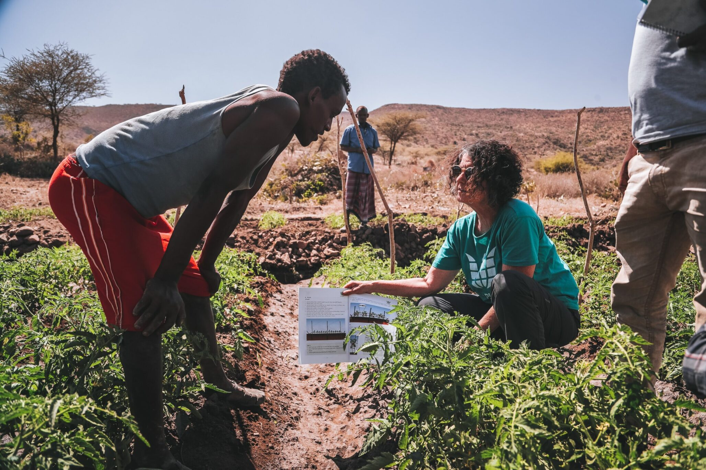

Seed Africa
Seed Africa is a non-governmental organization (NGO) dedicated to transforming agriculture across Africa. Our mission is to empower smallholder farmers with the resources, knowledge, and technology needed to improve crop yields, achieve food security, and enhance livelihoods. By promoting sustainable farming practices and facilitating access to markets, we aim to build resilient agricultural communities and reduce poverty across the continent.
Vision: To see a thriving, sustainable agricultural sector that drives economic growth, food security, and prosperity for all African communities.
Impact: Seed Africa has directly impacted over 75,000 farmers across multiple African countries. Through our initiatives, participating farmers have seen a 40% increase in crop yields and a significant improvement in their household incomes. Our work has contributed to food security in several regions, reducing hunger and improving nutrition.